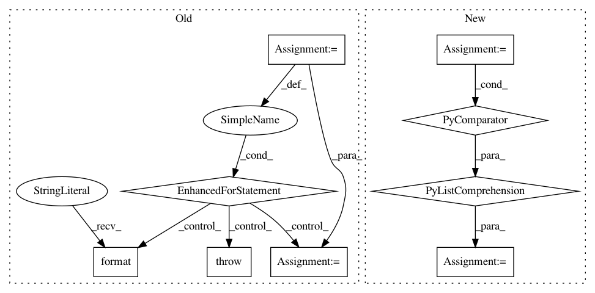

324b7782f36d17aa0375b74bd0fc9c0f7bd037ee,chainercv/chainer_experimental/datasets/sliceable/getter_dataset.py,GetterDataset,keys,#GetterDataset#Any#,65
Before Change
keys, self._return_tuple = (keys,), False
new_keys = []
for key in keys:
if isinstance(key, int):
key_index = key
if key_index >= len(self._keys):
raise IndexError("Invalid index of key")
if key_index < 0:
key_index += len(self._keys)
else:
try:
key_index = _as_tuple(self.keys).index(key)
except ValueError:
raise KeyError("{} does not exists".format(key))
new_keys.append(self._keys[key_index])
self._keys = new_keys
def add_getter(self, keys, getter):
Register a getter function
After Change
@keys.setter
def keys(self, keys):
self._keys = [self._keys[key_index]
for key_index in _as_indices(keys, self.keys)]
self._return_tuple = isinstance(keys, (list, tuple))
def add_getter(self, keys, getter):
Register a getter function
In pattern: SUPERPATTERN
Frequency: 3
Non-data size: 9
Instances
Project Name: chainer/chainercv
Commit Name: 324b7782f36d17aa0375b74bd0fc9c0f7bd037ee
Time: 2018-04-17
Author: Hakuyume@users.noreply.github.com
File Name: chainercv/chainer_experimental/datasets/sliceable/getter_dataset.py
Class Name: GetterDataset
Method Name: keys
Project Name: uber/ludwig
Commit Name: 7d9db23a389499c2764fb850cd19f853cc3e8565
Time: 2019-08-08
Author: smiryala@uber.com
File Name: ludwig/features/image_feature.py
Class Name: ImageBaseFeature
Method Name: add_feature_data
Project Name: uber/ludwig
Commit Name: 5667af96dade79ef77194d519182d4989494b3a4
Time: 2019-08-25
Author: smiryala@uber.com
File Name: ludwig/features/image_feature.py
Class Name: ImageBaseFeature
Method Name: add_feature_data